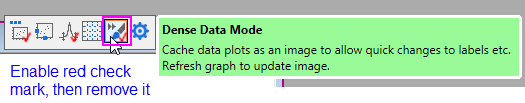

Farbpunkte
Color-Dots

Datenanforderungen
Wählen Sie genau zwei Y-Spalten oder einen Datenbereich aus zwei Y-Spalten aus. Wenn es eine verbundene X-Spalte gibt, stellt die X-Spalte die X-Werte bereit; ansonsten wird ein Abtastintervall der Y-Spalte oder Zeilennummer verwendet.
Diagramm erstellen
- Wählen Sie Daten aus zwei Y-Spalten aus.
- Wählen Sie im Menü .
Vorlage
ColorDots.OTPU (installiert im Origin-Programmordner).
Hinweise
Verwenden Sie diese Vorlage zum Zeichnen von großen Mengen von Streupunkten, wobei Sie eine vorberechnete Spalte mit einem Intensitätsfaktor haben, die Sie zum Färben jedes Streupunkts verwenden. Diese Vorlage unterscheidet sich von der Vorlage Dichtepunkte darin, dass die Dichtepunkte den Intensitätsfaktor aus der Anzahl der überlagerten Punkte berechnen.
- Der Entwurfsmodus ist per Standard ausgeschaltet, so dass alle Datenpunkte dargestellt werden.
- Um Diagramme schneller neu zeichnen zu können, ist das Bitmap-Caching für diesen Diagrammtyp ausgeschaltet. Wenn Caching verwendet wird, werden die Größe und die Propotionen eines vorbereiteten Bitmaps je nach Bedarf angepasst, wenn das Fenster in der Größe verändert oder gestreckt wird. In einigen Fällen wird dieses Bitmap pixelig oder verzerrt. Sollte dies nicht akzeptabel sein, können Sie das Caching ausschalten, indem Sie auf die Schaltfläche Dichtedatenmodus auf der Minisymbolleiste (Seitenebene) zweimal klicken (nach dem zweiten Klick sollte sich kein Häkchen mehr auf der Schaltfläche befinden).
-
- .